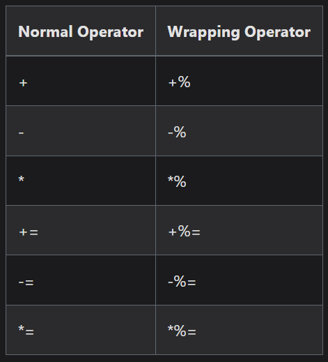

Types
Casting
@prtCast
-
We can use
@ptrCastto create a new variable that points to the same location but as a different type. -
Ex1 :
const std = @import("std"); const User = struct { id: u32, name: []const u8, }; const Node = struct { next: ?*Node, }; pub fn main() !void { var user1 = User{.id = 1, .name = "Leto"}; const node1: *Node = @ptrCast(&user1); node1.next = null; std.debug.print("{}\n", .{node1}); }-
This code not only compiles, but it also runs. Compiling and running are two distinct aspects we must consider. The code compiles because we told the compiler it was ok to treat the memory as a
*Node.@ptrCastisn't changing the memory at runtime, it's forcing the compiler to see the memory as a*Node. In this case, the code runs because there are some truths we can rely on that make it so the memory used to represent aUsercan safely be used to represent aNode.
-
-
Ex2 :
const std = @import("std"); const User = struct { id: u32, name: []const u8, }; const Node = struct { next: ?*Node, }; pub fn main() !void { var node1 = Node{.next = null}; const user: *User = @ptrCast(&node1); std.debug.print("Id: {d}\n", .{user.id}); std.debug.print("Name: {d}\n", .{user.name}); }-
Now we're creating a
Nodeand telling the compiler to see the underlying memory as aUser. Again, this code compiles. But what happens when we try to run it? You'll probably get the same thing I did:Id: 0followed by a segfault. -
Why does it work one way but not the other? Consider the size of a
Nodeand the size of aUser:
const std = @import("std"); pub fn main() !void { std.debug.print("Node: {d} User: {d}\n", .{@sizeOf(Node), @sizeOf(User)}); }-
Assuming you're on a modern platform, you'll likely see:
Node: 8 User: 24. -
This highlights the power and danger of
@ptrCast: it's obvious that the memory underlying aNodeisn't big enough to represent a wholeUser, but@ptrCastforces the compiler to proceed as though it can. -
But size constraints aren't the only issue. Let's go back to our original example and add 2 more lines at the end:
const std = @import("std"); const User = struct { id: u32, name: []const u8, }; const Node = struct { next: ?*Node, }; pub fn main() !void { var user1 = User{.id = 1, .name = "Leto"}; const node1: *Node = @ptrCast(&user1); node1.next = null; std.debug.print("{}\n", .{node1}); std.debug.print("{d}\n", .{user1.id}); // added std.debug.print("{s}\n", .{user1.name}); // added }-
The underlying memory for
node1is more than big enough, but the code still crashes. When we write touser.idoruser1.name, the compiler enforces correctness:idmust be anu32andnamemust be a[]const u8. Similarly, when we writenulltonode1.next, the code compiles becausenullis a valid?*Node. But when, at runtime, we try to interpret thatnullas a part of aUser, the behavior becomes undefined (i.e. we'll most likely crash).
-
-
Cautions :
-
One last thing worth pointing out is that, unless a structure is declared as
packed, Zig makes no guarantee about its memory layout. -
In almost all cases, you should not write to memory as one type and read it as another (which is exactly what we've done throughout the post).
-
Unless the struct is
packedor the struct is very simple, you cannot predict how those read/writes will be interpreted by different types sharing the same memory.
-
Primitives
-
List .
Integers
-
Integers .
const decimal_int: i32 = 98222;
const hex_int: u8 = 0xff;
const another_hex_int: u8 = 0xFF;
const octal_int: u16 = 0o755;
const binary_int: u8 = 0b11110000;
const one_billion: u64 = 1_000_000_000;
const binary_mask: u64 = 0b1_1111_1111;
const permissions: u64 = 0o7_5_5;
const big_address: u64 = 0xFF80_0000_0000_0000;
-
Coercion / Casting :
const expect = @import("std").testing.expect; test "integer widening" { const a: u8 = 250; // This is ok, providing that the new type can fit all of the values that the old type can. const b: u16 = a; const c: u32 = b; try expect(c == a); }const expect = @import("std").testing.expect; test "@intCast" { const x: u64 = 200; const y = @as(u8, @intCast(x)); try expect(@TypeOf(y) == u8); } -
Overflow :
-
Overflows are detectable illegal behaviour.
-
Sometimes, being able to overflow integers in a well-defined manner is a wanted behaviour.
-
 .
-
-
Saturation :
-
Values will stick to their lower and upper bounds.
var i: u8 = 200; // "i" is an unsigned 8-bit integer (values: from 0 to 255) i +| 100 == 255 // u8: won't go higher than 255 i -| 300 == 0 // unsigned, won't go lower than 0 i *| 2 == 255 // u8: won't go higher than 255 i <<| 8 == 255 // u8: won't go higher than 255 -
Floats
-
Floats .
const floating_point: f64 = 123.0E+77;
const another_float: f64 = 123.0;
const yet_another: f64 = 123.0e+77;
const hex_floating_point: f64 = 0x103.70p-5;
const another_hex_float: f64 = 0x103.70;
const yet_another_hex_float: f64 = 0x103.70P-5;
const lightspeed: f64 = 299_792_458.000_000;
const nanosecond: f64 = 0.000_000_001;
const more_hex: f64 = 0x1234_5678.9ABC_CDEFp-10;
-
Coercion / Casting :
-
Floats coerce to larger float types.
const expect = @import("std").testing.expect; test "float widening" { const a: f16 = 0; const b: f32 = a; const c: f128 = b; try expect(c == @as(f128, a)); }-
@floatFromInt-
Is always safe
-
-
@intFromFloat-
Is detectable illegal behaviour if the float value cannot fit in the integer destination type.
-
const expect = @import("std").testing.expect; test "int-float conversion" { const a: i32 = 0; const b = @as(f32, @floatFromInt(a)); const c = @as(i32, @intFromFloat(b)); try expect(c == a); } -
Generics
types
-
A function can return any type, not just primitives and arrays.
-
typesmust always be compile-time known.
Examples
-
Returns an Array (new array type) :
const std = @import("std"); pub fn main() !void { var arr: IntArray(3) = undefined; arr[0] = 1; arr[1] = 10; arr[2] = 100; std.debug.print("{any}\n", .{arr}); } fn IntArray(comptime length: usize) type { return [length]i64; }-
This code only worked because we declared
lengthascomptime. That is, we require anyone who callsIntArrayto pass a compile-time knownlengthparameter.
-
-
Returns a Struct (type) :
const std = @import("std"); pub fn main() !void { var arr: IntArray(3) = undefined; arr.items[0] = 1; arr.items[1] = 10; arr.items[2] = 100; std.debug.print("{any}\n", .{arr.items}); } fn IntArray(comptime length: usize) type { return struct { items: [length]i64, }; } -
Receives a type and returns a Struct (type) :
fn List(comptime T: type) type { return struct { pos: usize, items: []T, allocator: Allocator, fn init(allocator: Allocator) !List(T) { return .{ .pos = 0, .allocator = allocator, .items = try allocator.alloc(T, 4), }; } }; }
Tuples
Tuples
// A tuple is a list of elements, possibly of different types.
const foo = .{ "hello", true, 42 };
// foo.len == 3
Arrays
-
Arrays .
Array (
[N]T
)
const a = [5]u8{ 'h', 'e', 'l', 'l', 'o' };
const b = [_]u8{ 'w', 'o', 'r', 'l', 'd' };
const c: [100]u8 = [_]u8{1} ** 100;
const array = [_]u8{ 'h', 'e', 'l', 'l', 'o' };
const length = array.len; // 5
-
Multidimensional :
const mat4x4 = [4][4]f32{ .{ 1, 0, 0, 0 }, .{ 0, 1, 0, 1 }, .{ 0, 0, 1, 0 }, .{ 0, 0, 0, 1 }, }; // Access the 2D array then the inner array through indexes. try expect(mat4x4[1][1] == 1.0); // Here we iterate with for loops. for (mat4x4) |row, row_index| { for (row) |cell, column_index| { // ... } }
ArrayList (
std.ArrayList(T)
)
-
Serves as a buffer that can change size.
-
Similarities :
-
std.ArrayList(T)is similar to C++'sstd::vector<T>and Rust'sVec<T>.
-
-
Memory :
-
The
deinit()method frees all memory used by the ArrayList. -
Memory can be read from and written to via its slice field -
.items.
-
const std = @import("std");
const expect = std.testing.expect;
const eql = std.mem.eql;
const ArrayList = std.ArrayList;
const test_allocator = std.testing.allocator;
test "arraylist" {
var list = ArrayList(u8).init(test_allocator);
defer list.deinit();
try list.append('H');
try list.append('e');
try list.append('l');
try list.append('l');
try list.append('o');
try list.appendSlice(" World!");
try expect(eql(u8, list.items, "Hello World!"));
}
Vectors
-
Allow efficient parallel operations using SIMD (Single Instruction, Multiple Data) instructions.
-
A data type that stores multiple values of the same type.
-
Vectors can only have child types of booleans, integers, floats and pointers.
-
-
Note that using explicit vectors may result in slower code if you make wrong choices. The compiler's auto-vectorization is fairly smart.
-
Access :
-
Vectors are indexable.
const expect = @import("std").testing.expect; test "vector indexing" { const x: @Vector(4, u8) = .{ 255, 0, 255, 0 }; try expect(x[0] == 255); } -
-
Operations :
-
Addition :
const expect = @import("std").testing.expect; const meta = @import("std").meta; test "vector add" { const x: @Vector(4, f32) = .{ 1, -10, 20, -1 }; const y: @Vector(4, f32) = .{ 2, 10, 0, 1 }; const z = x + y; try expect(meta.eql(z, @Vector(4, f32){ 3, 0, 20, 0 })); }const a: @Vector(4, i32) = @Vector(4, i32){ 1, 2, 3, 4 }; const b: @Vector(4, i32) = @Vector(4, i32){ 10, 20, 30, 40 }; const c = a + b; // Result: {11, 22, 33, 44} -
Scalar Multiply :
-
The function
@splat(len, value)creates a vector filled with the same value.
const v: @Vector(4, i32) = @Vector(4, i32){ 2, 4, 6, 8 }; const scale = 2; const result = v * @splat(4, scale); // {4, 8, 12, 16} -
-
-
Coercion :
-
Vectors coerce to their respective arrays.
const arr: [4]f32 = @Vector(4, f32){ 1, 2, 3, 4 }; -
Strings
// Simple string constant.
const greetings = "hello";
// ... which is equivalent to:
const greetings: *const [5:0]u8 = "hello";
// In words: "greetings" is a constant value, a pointer to a constant array of 5 elements (8-bit unsigned integers), with an extra '0' at the end.
// The extra "0" is called a "sentinel value".
print("string: {s}\n", .{greetings});
-
"There are no strings in Zig, everything is an array of u8. It's frustrating."
-
[]const u8
-
-
Tutorial .
-
Tutorial .
-
Tutorial .
-
RAGE AGAINST THE DYING OF THE LIGHT..................................
String Literals
-
The type of string literals is
*const [N:0]u8, where N is the length of the string.-
This allows string literals to coerce to sentinel-terminated slices, and sentinel-terminated many pointers.
-
const expect = @import("std").testing.expect;
test "string literal" {
try expect(@TypeOf("hello") == *const [5:0]u8);
}
Concatenation
-
With Alloc :
const std = @import("std"); pub fn main() !void { const name = "Leto"; const say = std.fmt.allocPrint(allocator, "Hello {s}", .{name}); defer allocator.free(say); std.debug.print("{s}\n", .{greeting}); -
With buffer :
-
This API moves the memory management burden to the caller. If we had a longer
name, or a smallerbuf, ourbufPrintcould return aNoSpaceLefterror. -
But there are plenty of scenarios where an application has known limits, such as a maximum name length.
-
In those cases
bufPrintis safer and faster.
const std = @import("std"); pub fn main() !void { const name = "Leto"; var buf: [100]u8 = undefined; const greeting = try std.fmt.bufPrint(&buf, "Hello {s}", .{name}); std.debug.print("{s}\n", .{greeting}); } -
Equal
const internalIcons = "Internal_Icons";
if (std.mem.eql(u8, internalIcons, "Internal_Icons")) continue;
Contains
-
Contains .
Copy
-
Copy .
C Strings
-
[*:0]u8and[*:0]const u8perfectly model C's strings.
const expect = @import("std").testing.expect;
test "C string" {
const c_string: [*:0]const u8 = "hello";
var array: [5]u8 = undefined;
var i: usize = 0;
while (c_string[i] != 0) : (i += 1) {
array[i] = c_string[i];
}
}
Sentinel Termination
-
[N:t]T,[:t]T, and[*:t]T, wheretis a value of the child typeT.
const expect = @import("std").testing.expect;
test "sentinel termination" {
const terminated = [3:0]u8{ 3, 2, 1 };
try expect(terminated.len == 3);
try expect(@as(*const [4]u8, @ptrCast(&terminated))[3] == 0);
// `@ptrCast` is used to perform an unsafe type conversion. This shows us that the last element of the array is followed by a 0 byte.
}
-
Coercion :
-
Sentinel-terminated types coerce to their non-sentinel-terminated counterparts.
const expect = @import("std").testing.expect; test "coercion" { const a: [*:0]u8 = undefined; const b: [*]u8 = a; const c: [5:0]u8 = undefined; const d: [5]u8 = c; const e: [:0]f32 = undefined; const f: []f32 = e; _ = .{ b, d, f }; // ignore unused } -
-
Sentinel Terminated Slicing :
-
Can be used to create a sentinel-terminated slice with the syntax
x[n..m:t], wheretis the terminator value. -
Doing this is an assertion from the programmer that the memory is terminated where it should be. Getting this wrong is detectable illegal behaviour.
const expect = @import("std").testing.expect; test "sentinel terminated slicing" { var x = [_:0]u8{255} ** 3; const y = x[0..3 :0]; _ = y; } -
HashMaps
-
std.StringHashMapandstd.AutoHashMapare just wrappers forstd.HashMap.-
If these two do not fulfill your needs, using
std.HashMapdirectly gives you much more control.
-
AutoHashMap
-
std.AutoHashMap -
Lets you easily create a hash map type from a key type and a value type.
-
These must be initialized with an allocator.
test "hashing" {
const Point = struct { x: i32, y: i32 };
var map = std.AutoHashMap(u32, Point).init(
test_allocator, // refers to `std.testing.allocator`.
);
defer map.deinit();
try map.put(1525, .{ .x = 1, .y = -4 });
try map.put(1550, .{ .x = 2, .y = -3 });
try map.put(1575, .{ .x = 3, .y = -2 });
try map.put(1600, .{ .x = 4, .y = -1 });
try expect(map.count() == 4);
var sum = Point{ .x = 0, .y = 0 };
var iterator = map.iterator();
while (iterator.next()) |entry| {
sum.x += entry.value_ptr.x;
sum.y += entry.value_ptr.y;
}
try expect(sum.x == 10);
try expect(sum.y == -10);
}
-
.fetchPut-
Puts a value in the hash map, returning a value if there was previously a value for that key.
test "fetchPut" { var map = std.AutoHashMap(u8, f32).init( test_allocator, ); defer map.deinit(); try map.put(255, 10); const old = try map.fetchPut(255, 100); try expect(old.?.value == 10); try expect(map.get(255).? == 100); } -
StringHashMap
-
std.StringHashMap -
For when you need strings as keys.
test "string hashmap" {
var map = std.StringHashMap(enum { cool, uncool }).init(
test_allocator,
);
defer map.deinit();
try map.put("loris", .uncool);
try map.put("me", .cool);
try expect(map.get("me").? == .cool);
try expect(map.get("loris").? == .uncool);
}
Enums (
enum {}
)
-
Allow you to define types with a restricted set of named values.
const Direction = enum { north, south, east, west };
const Value = enum(u2) { zero, one, two };
-
Default values :
-
Enum ordinal values start at 0. They can be accessed with the built-in function
@intFromEnum.
const expect = @import("std").testing.expect; const Value = enum(u2) { zero, one, two }; test "enum ordinal value" { try expect(@intFromEnum(Value.zero) == 0); try expect(@intFromEnum(Value.one) == 1); try expect(@intFromEnum(Value.two) == 2); }-
Values can be overridden, with subsequent values continuing from there.
const expect = @import("std").testing.expect; const Value2 = enum(u32) { hundred = 100, thousand = 1000, million = 1000000, next, }; test "set enum ordinal value" { try expect(@intFromEnum(Value2.hundred) == 100); try expect(@intFromEnum(Value2.thousand) == 1000); try expect(@intFromEnum(Value2.million) == 1000000); try expect(@intFromEnum(Value2.next) == 1000001); } -
-
Variables :
-
Enums can also have
varandconstdeclarations. -
These act as namespaced globals and their values are unrelated to instances of the enum type.
const expect = @import("std").testing.expect; const Mode = enum { var count: u32 = 0; on, off, }; test "hmm" { Mode.count += 1; try expect(Mode.count == 1); } -
-
Methods :
const expect = @import("std").testing.expect; const Suit = enum { clubs, spades, diamonds, hearts, pub fn isClubs(self: Suit) bool { return self == Suit.clubs; } }; test "enum method" { try expect(Suit.spades.isClubs() == Suit.isClubs(.spades)); } -
Casting :
-
Enums aren't integers. Convert them with a built-in.
const Value = enum { zero, stuff, blah }; if (@enumToInt(Value.zero) == 0) { ... } if (@enumToInt(Value.stuff) == 1) { ... } if (@enumToInt(Value.blah) == 2) { ... } -
Unions
-
Define types that store one value of many possible typed fields.
-
Only one field may be active at a time.
const Result = union {
int: i64,
float: f64,
bool: bool,
};
test "simple union" {
var result = Result{ .int = 1234 };
result.int = 11; // valid.
result.float = 12.34; // invalid.
}
-
Tagged Unions :
-
Are unions that use an enum to indicate which field is active.
const expect = @import("std").testing.expect; const Tag = enum { a, b, c }; const Tagged = union(Tag) { a: u8, b: f32, c: bool }; test "switch on tagged union" { var value = Tagged{ .b = 1.5 }; switch (value) { // With `|*value|` we can capture a pointer to the values instead of the values themselves, allowing us to use dereferencing to mutate the original value. .a => |*byte| byte.* += 1, .b => |*float| float.* *= 2, .c => |*b| b.* = !b.*, } try expect(value.b == 3); }-
The tag type of a tagged union can also be inferred. This is equivalent to the
Taggedtype above.
const Tagged = union(enum) { a: u8, b: f32, c: bool };-
voidmember types can have their type omitted from the syntax. Here,nonehas typevoid.
const Tagged2 = union(enum) { a: u8, b: f32, c: bool, none }; -
Structs (
T{}
)
-
Zig gives no guarantees about the in-memory order of fields in a struct or its size.
-
Struct fields cannot be implicitly uninitialized. If some component of the Struct is missing initialization, it will cause an error.
const Vec3 = struct { x: f32, y: f32, z: f32 };
test "struct usage" {
const my_vector = Vec3{
.x = 0,
.y = 100,
.z = 50,
};
_ = my_vector;
}
-
Defaults :
const Vec4 = struct { x: f32 = 0, y: f32 = 0, z: f32 = 0, w: f32 = 0 }; test "struct defaults" { const my_vector = Vec4{ .x = 25, .y = -50, }; _ = my_vector; } -
Packed :
// Packed structure, with guaranteed in-memory layout. const Divided = packed struct { half1: u8, quarter3: u4, quarter4: u4, }; -
Methods :
-
"Structs have the unique property that when given a pointer to a struct, one level of dereferencing is done automatically when accessing fields."
-
"In this example,
self.xandself.yare accessed in the swap function without needing to dereference the self pointer."
const expect = @import("std").testing.expect; const Stuff = struct { x: i32, y: i32, fn swap(self: *Stuff) void { const tmp = self.x; self.x = self.y; // "without needing to dereference the self pointer", I believe this is `self.x` in Zig, whereas in C++ it would be `self->x` / `(*self).x`. self.y = tmp; } }; test "automatic dereference" { var thing = Stuff{ .x = 10, .y = 20 }; thing.swap(); try expect(thing.x == 20); try expect(thing.y == 10); }const Point = struct { const Self = @This(); // Refers to its own type (later called "Point"). x: u32, y: u32, // Take a look at the signature. First argument is of type *Self: "self" is // a pointer on the instance of the structure. // This allows the same "dot" notation as in OOP, like "instance.set(x,y)". // See the following example. pub fn set(self: *Self, x: u32, y: u32) void { self.x = x; self.y = y; } // Again, look at the signature. First argument is of type Self (not *Self), // this isn't a pointer. In this case, "self" refers to the instance of the // structure, but can't be modified. pub fn getx(self: Self) u32 { return self.x; } // PS: two previous functions may be somewhat useless. // Attributes can be changed directly, no need for accessor functions. // It was just an example. }; -
-
Anonymous Structs :
const expect = @import("std").testing.expect; test "anonymous struct literal" { const Point = struct { x: i32, y: i32 }; const pt: Point = .{ .x = 13, .y = 67, }; try expect(pt.x == 13); try expect(pt.y == 67); }const expect = @import("std").testing.expect; test "fully anonymous struct" { try dump(.{ .int = @as(u32, 1234), .float = @as(f64, 12.34), .b = true, .s = "hi", }); } fn dump(args: anytype) !void { try expect(args.int == 1234); try expect(args.float == 12.34); try expect(args.b); try expect(args.s[0] == 'h'); try expect(args.s[1] == 'i'); } -
Files as Structs :
-
Using files as structs {11:30} .
-
Important notes:
-
const Point = @This;as the access point. -
Define functions as
pubif you want them accessible outside the file.
-
-
-
@This()
const Tea = struct {
const Self = @This();
};
pub fn main() !void {
// prints "true"
std.debug.print("{}\n", .{Tea == Tea.Self});
}
Declaration
-
"The principal units of code in Zig are declarations, not expressions".
-
In Godot :
const z := Vector2(0, 0) -
Method 'a' :
const a: rl.Vector2 = .{.x = 0, .y = 0};-
Initializes the struct by values.
-
The method is called 'Anonymous Struct'.
-
Caio:
-
When it comes to defining default values in a struct, maybe method
ais okay, but it's still inconvenient.
const MinhaStruct = Struct{ // vel: rl.Vector2 = .{.x = 0, .y = 0}, // vel: rl.Vector2 = rl.Vector2.init(0, 0), }; -
-
-
Method 'b' :
const b = rl.Vector2.init(0, 0);-
Caio:
-
I feel a bit worried about 'initializing the struct by values', as I don't know if I'm initializing all the necessary values of the struct, so I usually go for a
.init-based approach. -
The problem is: I change the struct, but I don't get warnings from the LSP, so the only way I know I'm creating the struct wrong is when compiling. Though, if there is an
initfunction and I'm always using it, it feels easier on the LSP, and I don't need to compile to see the error. -
I'm thinking more about how to avoid having to compile every time to check for type errors in places where I use the struct.
-
-
-
Method 'c' :
const c = rl.Vector2{.x = 0, .y = 0};-
Initializes the struct by values.
-
Quotes:
-
"c is probably least recommended followed by b."
-
"a and b are fine, c is weird".
-
-
-
Method 'd'
const d: rl.Vector2 = .init(0, 0);-
Quotes:
-
"the problem with d is that it doesn't work with
catch".
-
-